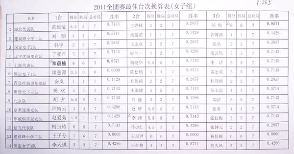

2011全团各项荣誉以及女子组最佳台次换算表
首页
五子棋新闻
#1 2011全团各项荣誉以及女子组最佳台次换算表 作者：被感动的人 发表时间：2011-5-2 12:11:35

［ 失落刀 于 2011-5-2 12:13:17 时花20金币送鲜花一朵］
［ 聚贤联盟特使 于 2011-5-2 18:43:27 时花20金币送鲜花一朵］
#2 Re:2011全团各项荣誉以及女子组最佳台次换算表 作者：^版徒 发表时间：2011-5-2 12:14:48
恭喜华夏队获道德风尚奖,祝贺华夏笑天获得优秀教练［此帖子已被 ^版徒 在 2011-5-2 12:17:21 编辑过］
#3 Re:2011全团各项荣誉以及女子组最佳台次换算表 作者：可有可无滴人 发表时间：2011-5-2 12:18:46
华夏对哇塞！！
#4 Re:2011全团各项荣誉以及女子组最佳台次换算表 作者：冬日恋歌 发表时间：2011-5-2 12:19:32
华夏 华夏
华夏
#5 Re:2011全团各项荣誉以及女子组最佳台次换算表 作者：被感动的人 发表时间：2011-5-2 12:20:29
女子最佳台次
1台上海郑蔚楠
2台 那威李涛
3台 湖北刘恂
#6 Re:2011全团各项荣誉以及女子组最佳台次换算表 作者：梧桐风 发表时间：2011-5-2 12:21:01
呀，王烨林的胜局只有二盘，不会吧
#7 Re:2011全团各项荣誉以及女子组最佳台次换算表 作者：也也 发表时间：2011-5-3 6:34:41
恭喜 雨欣姐